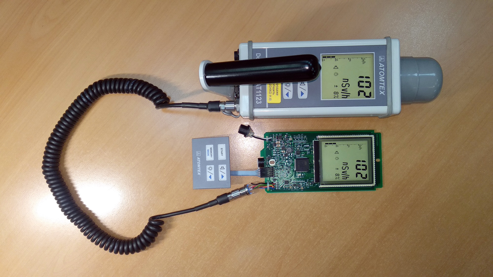
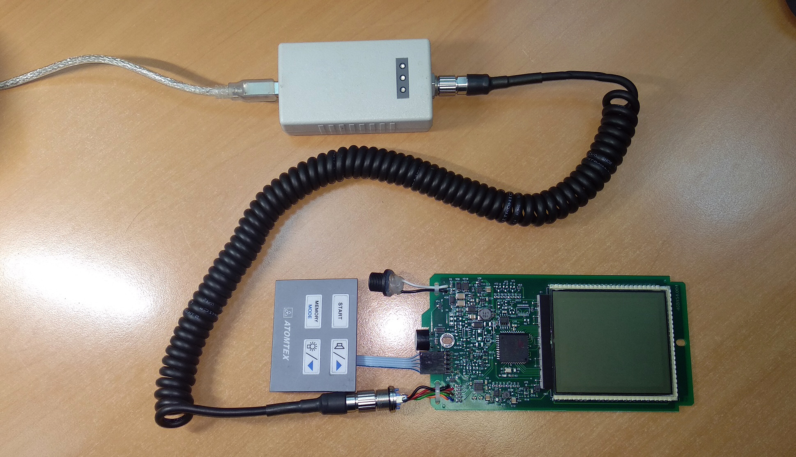
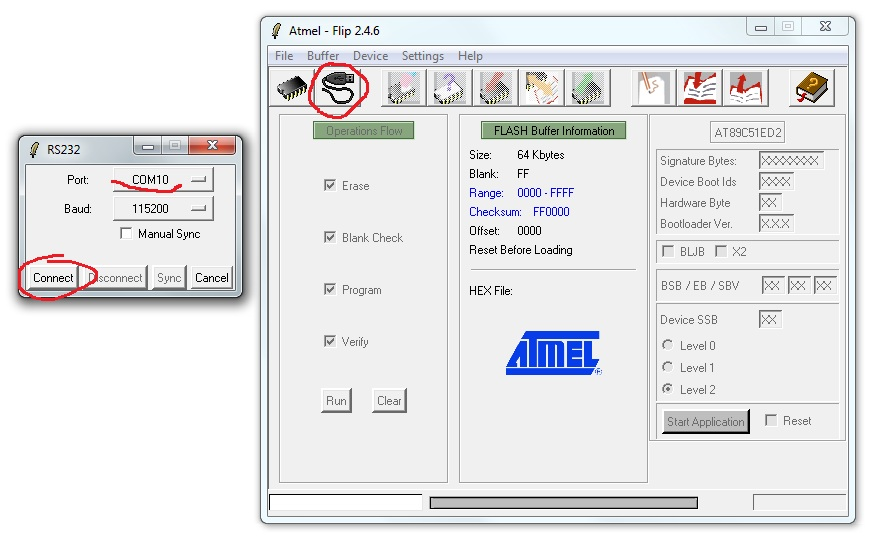
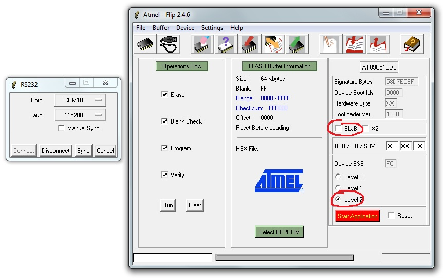

ПДУ
Пульт дистанционного управления
- Подключить к плате технологическую клавиатуру. Подключить ПДУ к АТ1123.
- Включить ПДУ — дозиметр тоже включиться. Экран ПДУ должен в точности повторять показания
на экране дозиметра:

- Если при включении на ПДУ выскакивает "Err 24": не обращаем внимание, после выключения-включения
ошибка пропадет
- Если при включении ПДУ издает непрерывный звуковой сигнал и не включается: скорее всего при
прошивке не сняли флаг BLJB
Как исправить
- Подключить дозиметр к USB адаптеру (адаптер к USB пока не подключать)

- Замкнуть на контроллере землю (22-й вывод, например) и PSEN (32-й вывод).
А лучше зажать кнопку звука
- Подключить адаптер к USB, при этом будет слышен звуковой сигнал. Кнопку можно
отпустить
- Запустить Flip
- нажать подключиться, выбрать порт, нажать "Connect"

- Если флаг BLJB СТОИТ, снимаем его
- Ставим "Level 2"

- Нажимаем Disconnect.
- Подключаемся к 1123, плата теперь должна нормально работать.
- Если флаг BLJB НЕ СТОИТ, значит ошибка в чем-то другом (можно попробовать
поставить-снять флаг, бывает помогает)
- При включении зажать кнопку "ПОДСВЕТКА" и проверить наличие всех сегментов ЖКИ.
- Подключить к ПДУ адаптер 12 В, с помощью мультиметра замерить ток заряда — должен быть
примерно 460 мА.
- Запустить двойную подсветку и проверить отсутствие мусора и темных пятен между подсветкой и ЖКИ.
- Поставить отметку маркером на защитной пленке ЖКИ об отсутствии царапин.
- Проверить управление: ПУСК, ПАМЯТЬ, ПОДСТВЕТКУ и ЗВУК.